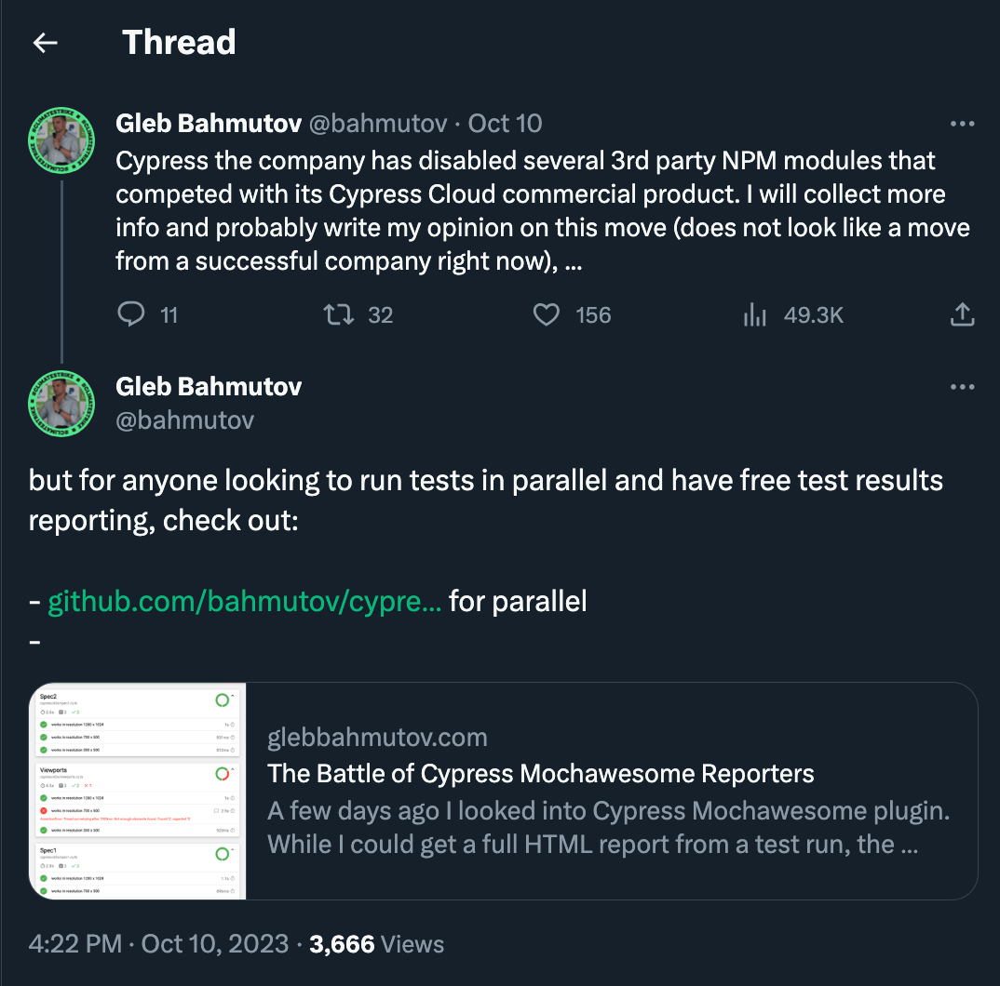
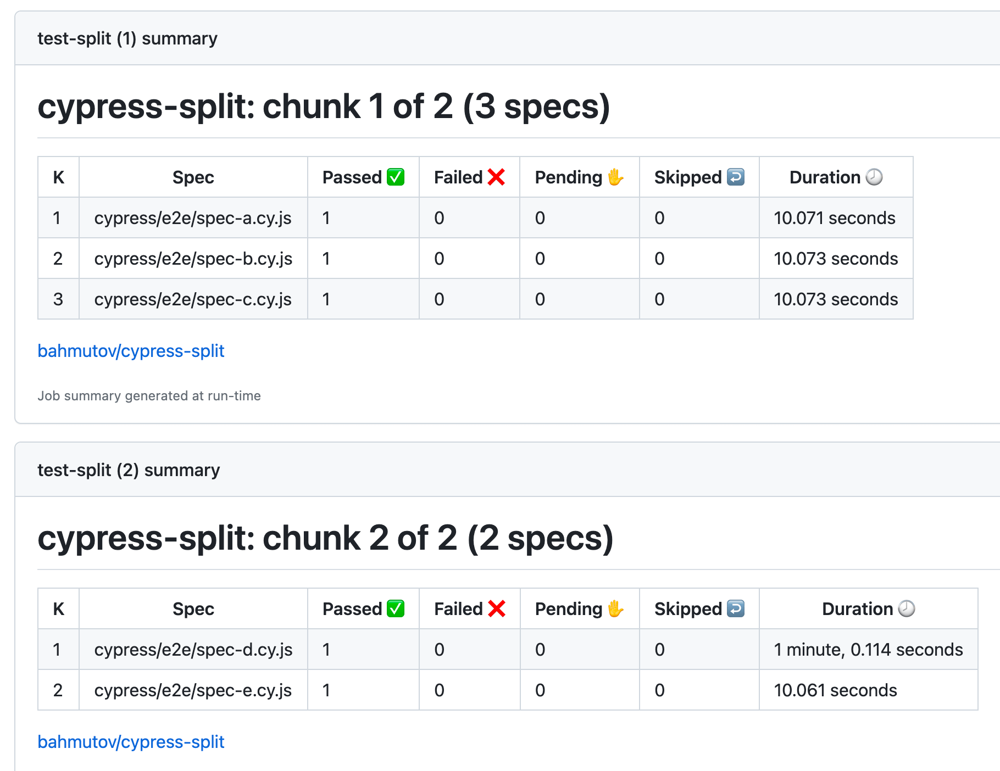
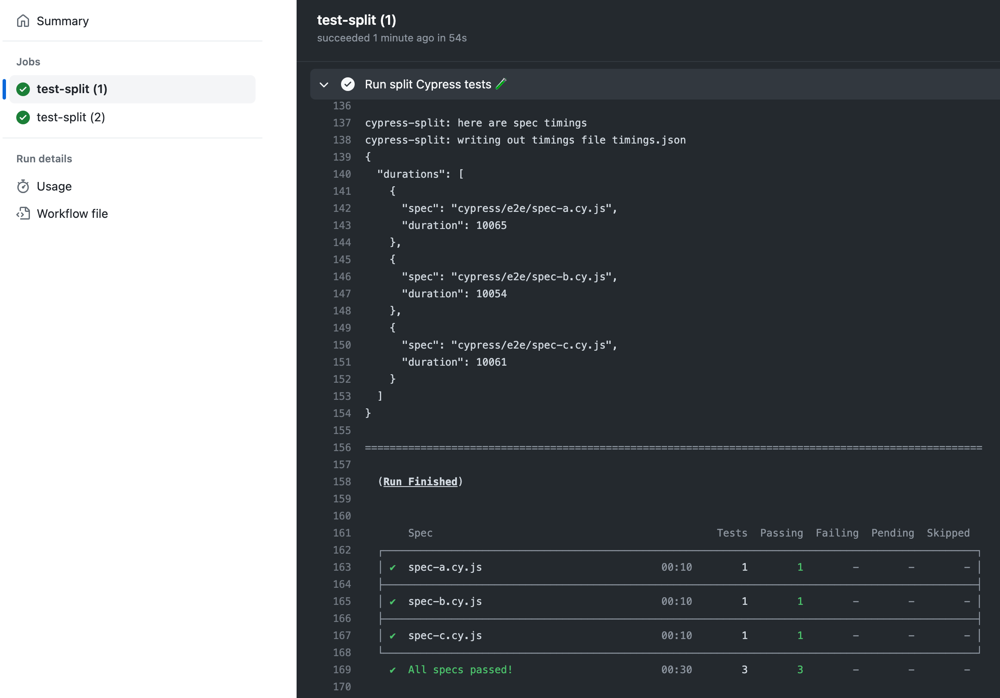
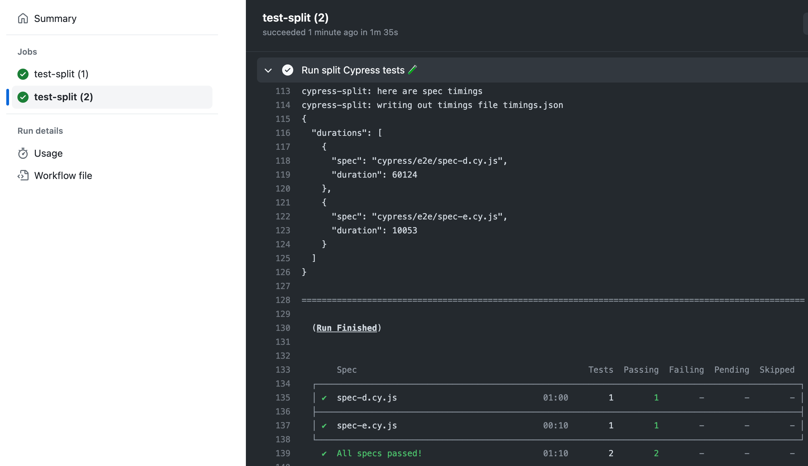
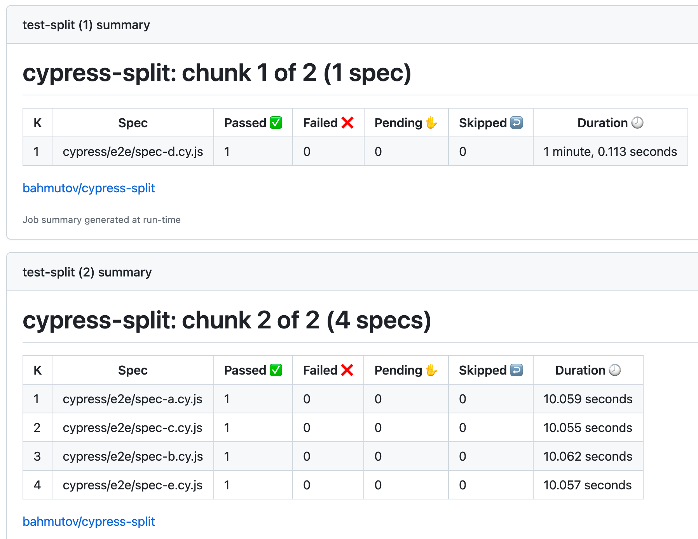
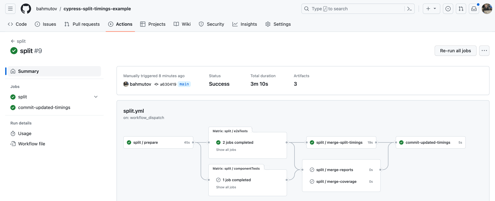
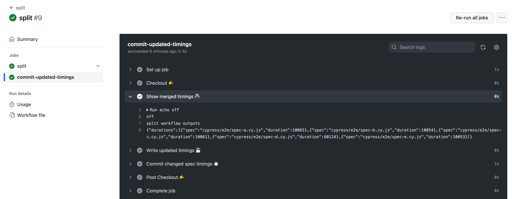

Recently Cypress-the-company blocked projects that use 3rd party dashboard plugins like sorry-cypress.

For more details see Cypress.io Blocking of Sorry Cypress and Currents.
Free solution is available
If you want to split your multiple specs across multiple machines for free, I have created cypress-split plugin and described how to Run Cypress Specs In Parallel For Free. This solution does not "mimic" the Cypress Cloud API, thus it should not be banned.
☢️ If Cypress team DOES block cypress-split plugin, then I will have no choice but to block all my Cypress plugins (I have written 75+ Cypress plugins) if Cypress is run with
--recordflag.
All we need to do to use this plugin is to add it to the setupNodeEvents callback.
1 | import { defineConfig } from 'cypress' |
The specs were split purely based on their names in the list, which can create unbalanced lists for machines. For example, let's take a project with five specs split across two machines. The first run splits the specs alphabetically:

Here is our GitHub Actions workflow file
1 | name: ci |
🎁 You can find the example application in the repo cypress-split-timings-example. In this examples I am using version v1 the
cypress-splitplugin.
Ughh, there is a spec spec-d.cy.js that is much longer than others, and it makes the second machine take much longer. While the second machine is running spec-d.cy.js and spec-e.cy.js, the first machine is idle. It would be better to shift the spec spec-e.cy.js to the first machine. Then we would save 10 seconds.
Timings
Let's tell cypress-split to split specs based on previous run timings. Unfortunately, we do not have 3rd party service to keep track of spec timings, thus we need to do it ourselves. Let's set another environment variable SPLIT_FILE on the test runners. Right now, it points at a non-existent file timings.json in the root folder of the repo.
1 | ... |
Let's run the workflow again. The timings.json file is not found yet, no big deal. The specs are split alphabetically.
1 | cypress-split: there are 5 found specs |
At the end of the run, the plugin prints JSON object with spec durations for the current machines.

The second machine prints its timings JSON

Note: the timings are logged to the terminal and saved in the local file on CI. Thus at the end of the test-run each machine has its own uncommitted SPLIT_FILE file on disk.
You manually copy / paste both timings and merge them into a single timings.json file and add to the repo.
1 | { |
With this file present in the repo, the CI runs and cypress-split splits the specs based on durations. The first machine runs only the spec cypress/e2e/spec-d.cy.js which takes by itself 60 seconds. The second machine runs the rest of the specs that together take up 40 seconds.

Nice. The spec split implementation can be found in the src/timings.js file in the cypress-split plugin. Right now it is a simple greedy algorithm, but it seems to work just fine.
Updating timings.json file: single CI job
If specs change or new specs are added, the timings file becomes out-of-date. I have a couple of ideas how to update it periodically without relying on 3rd party service.
Note: if the spec is new and does not have duration in the timings file yet, the split algorithm assigns it an average duration of all existing specs.
The first strategy is to use a single long CI job that runs all specs and then commits the updated timings.json file. It is very easy to commit changed files when using GitHub Actions CI.
1 | name: nightly |
The above workflow runs every day or when I start it manually from GitHub repo Actions tab. If there are any changes to the timings, the timings.json file is committed and pushed to the repository using the wonderful reusable GitHub Action stefanzweifel/git-auto-commit-action.
Note: cypress-split writes new timings file only if there are new specs or any durations are off by more than 10% from the existing ones.
Updating timings.json file: merge timings
Instead of running a single job with all specs to update the timings file, we can use my split workflow from cypress-workflows repo. It works with cypress-split alias cypress-split-merge to merge downloaded timings files from parallel runs and output a single combined JSON as a GitHub Actions output. Here is an example workflow from cypress-split-timings-example repo.
1 | name: split |

The reusable workflow split expands into multiple jobs. At the end, the merge-split-timings job creates the merged-timings output with all combined timings. We can commit the timings into the repo to be used for next CI run.

If you have any problems using cypress-split or cypress-workflows do not hesitate opening a GitHub issue. I will be happy to help.
Running all E2E tests should be fast and easy.
See also
- 📺 Watch presentation Fast Testing Using Cypress For Free 💸💸💸 and see its slides